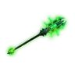

Métas recommandées
Lavistodes          |
Méchas   1060 / 60 1060 / 60   660 / 50   |
Meilleures attaques
| Joueur | Saison | Map | Compo | Dégâts | Type | Relatif |
|---|---|---|---|---|---|---|
| Alvalero | S108 · M1 | — | | 2 041 390 | Attaque | +48,7 % |
| Stitchy | S108 · M1 | — | | 1 976 720 | Attaque | +44,0 % |
| RandAlThor | S108 · M1 | — | | 1 950 213 | Attaque | +42,0 % |
| Stitchy | S108 · M1 | — | | 1 921 757 | Attaque | +40,0 % |
| Stitchy | S108 · M1 | — | | 1 903 904 | Attaque | +38,7 % |
| Stitchy | S108 · M1 | — | | 1 899 582 | Attaque | +38,4 % |
| Stitchy | S108 · M1 | — | | 1 875 563 | Attaque | +36,6 % |
| RandAlThor | S108 · M1 | — | | 1 873 196 | Attaque | +36,4 % |
| Stitchy | S108 · M1 | — | | 1 871 234 | Attaque | +36,3 % |
| Stitchy | S108 · M1 | — | | 1 863 388 | Attaque | +35,7 % |
| RandAlThor | S112 · M2 | | 2 050 562 | Attaque | +35,6 % | |
| Stitchy | S108 · M1 | — | | 1 858 433 | Attaque | +35,4 % |
| ΚΘDΙΛΛΚ | S112 · M2 | | 2 043 963 | Attaque | +35,2 % | |
| GAlbric | S108 · M1 | — | | 1 854 534 | Attaque | +35,1 % |
| Alvalero | S108 · M1 | — | | 1 844 298 | Attaque | +34,3 % |
| Stitchy | S108 · M1 | — | | 1 842 692 | Attaque | +34,2 % |
| Stitchy | S108 · M1 | — | | 1 837 432 | Attaque | +33,8 % |
| AllHailShadowSn | S112 · M2 | | 2 020 593 | Attaque | +33,6 % | |
| Stitchy | S112 · M2 | | 2 015 592 | Attaque | +33,3 % | |
| Thoramok | S108 · M1 | — | | 1 830 144 | Attaque | +33,3 % |
| AllHailShadowSn | S112 · M2 | | 2 011 250 | Attaque | +33,0 % | |
| bqsylou | S112 · M2 | | 2 010 313 | Attaque | +33,0 % | |
| ΚΘDΙΛΛΚ | S112 · M2 | | 1 998 199 | Attaque | +32,2 % | |
| Sephiroth | S112 · M2 | | 1 983 204 | Attaque | +31,2 % | |
| AllHailShadowSn | S112 · M2 | | 1 975 637 | Attaque | +30,7 % | |
| AllHailShadowSn | S112 · M2 | | 1 962 824 | Attaque | +29,8 % | |
| ΚΘDΙΛΛΚ | S110 · M1 |  | | 2 404 335 | Attaque | +29,8 % |
| Thoramok | S108 · M1 | — | | 1 777 804 | Attaque | +29,5 % |
| RandAlThor | S108 · M1 | — | | 1 776 112 | Attaque | +29,4 % |
| Sephiroth | S112 · M2 | | 1 954 169 | Attaque | +29,3 % | |
| ΚΘDΙΛΛΚ | S112 · M2 | | 1 946 498 | Attaque | +28,7 % | |
| RandAlThor | S112 · M2 | | 1 942 726 | Attaque | +28,5 % | |
| Stitchy | S112 · M2 | | 1 934 180 | Attaque | +27,9 % | |
| GAlbric | S108 · M1 | — | | 1 746 602 | Attaque | +27,2 % |
| ΚΘDΙΛΛΚ | S112 · M2 | | 1 912 589 | Attaque | +26,5 % | |
| Alvalero | S112 · M2 | | 1 905 455 | Attaque | +26,0 % | |
| ΚΘDΙΛΛΚ | S110 · M1 | | | 2 330 315 | Attaque | +25,8 % |
| ΚΘDΙΛΛΚ | S112 · M2 | | 1 893 597 | Attaque | +25,2 % | |
| ΚΘDΙΛΛΚ | S110 · M1 | | | 2 300 140 | Attaque | +24,1 % |
| Sephiroth | S112 · M2 | | 1 875 400 | Attaque | +24,0 % | |
| Stitchy | S110 · M1 | | | 2 288 257 | Attaque | +23,5 % |
| Stitchy | S112 · M2 | | 1 862 884 | Attaque | +23,2 % | |
| RandAlThor | S112 · M2 | | 1 853 265 | Attaque | +22,6 % | |
| RandAlThor | S112 · M2 | | 1 850 736 | Attaque | +22,4 % | |
| ΚΘDΙΛΛΚ | S110 · M1 | | | 2 267 026 | Attaque | +22,4 % |
| Thoramok | S112 · M2 | | 1 845 136 | Attaque | +22,0 % | |
| AllHailShadowSn | S112 · M2 | | 1 841 374 | Attaque | +21,8 % | |
| RandAlThor | S112 · M2 | | 1 840 571 | Attaque | +21,7 % | |
| AllHailShadowSn | S112 · M2 | | 1 840 101 | Attaque | +21,7 % | |
| Alvalero | S112 · M2 | | 1 839 438 | Attaque | +21,7 % | |
| Thoramok | S112 · M2 | | 1 830 593 | Attaque | +21,1 % | |
| RandAlThor | S110 · M1 | | | 2 242 931 | Attaque | +21,1 % |
| RandAlThor | S110 · M1 | | | 2 237 660 | Attaque | +20,8 % |
| Alvalero | S110 · M1 | | | 2 236 860 | Attaque | +20,7 % |
| ΚΘDΙΛΛΚ | S110 · M1 | | | 2 229 633 | Attaque | +20,3 % |
| RandAlThor | S110 · M1 | | | 2 227 525 | Attaque | +20,2 % |
| RandAlThor | S110 · M1 | | | 2 218 810 | Attaque | +19,8 % |
| Alvalero | S110 · M1 | | | 2 200 762 | Attaque | +18,8 % |
| Thoramok | S110 · M1 | | | 2 187 317 | Attaque | +18,1 % |
| RandAlThor | S110 · M1 | | | 2 166 439 | Attaque | +16,9 % |
| ΚΘDΙΛΛΚ | S110 · M1 | | | 2 162 262 | Attaque | +16,7 % |
| ΚΘDΙΛΛΚ | S110 · M1 | | | 2 143 466 | Attaque | +15,7 % |
| Stitchy | S110 · M1 | | | 2 142 480 | Attaque | +15,6 % |
| Stitchy | S110 · M1 | | | 2 139 515 | Attaque | +15,5 % |
| AllHailShadowSn | S112 · M2 | | 1 742 943 | Attaque | +15,3 % | |
| ΚΘDΙΛΛΚ | S110 · M1 | | | 2 131 176 | Attaque | +15,0 % |
| ΚΘDΙΛΛΚ | S110 · M1 | | | 2 116 496 | Attaque | +14,2 % |
| bqsylou | S110 · M1 | | | 2 080 419 | Attaque | +12,3 % |
| bqsylou | S110 · M1 | | | 1 926 165 | Attaque | +4,0 % |
| bqsylou | S112 · M2 | | 1 562 189 | Attaque | +3,3 % | |
| AllHailShadowSn | S112 · M2 | | 1 535 874 | Attaque | +1,6 % | |
| bqsylou | S110 · M1 | | | 1 800 240 | Attaque | -2,8 % |
| RegalBaston | S112 · M2 | | 1 452 029 | Attaque | -4,0 % | |
| RegalBaston | S110 · M1 | | | 1 605 609 | Attaque | -13,3 % |
| Kerhor | S112 · M2 | | 645 414 | Attaque | -57,3 % | |
| Kerhor | S112 · M2 | | 534 648 | Attaque | -64,6 % | |
| bqsylou | S110 · M1 | | | 616 218 | Attaque | -66,7 % |